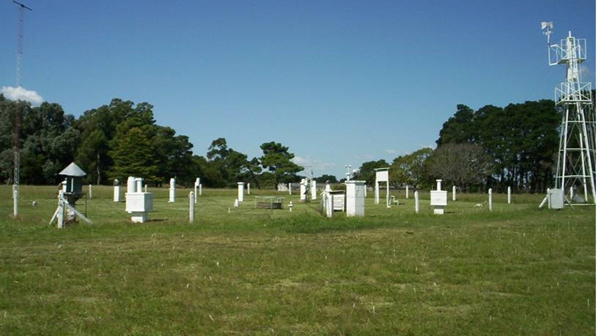
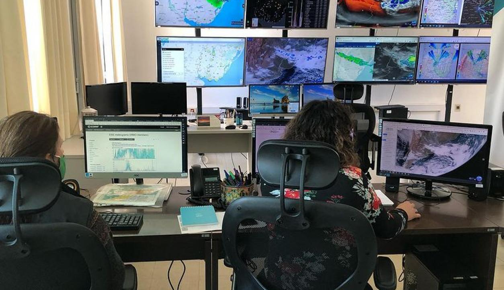
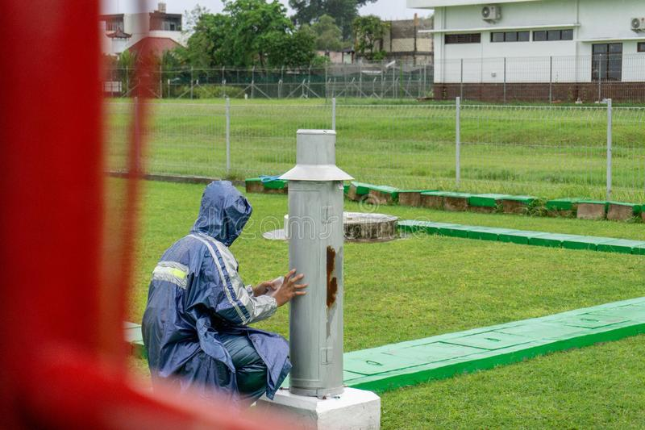

Somos un equipo multidisciplinario que trabaja para acercarte información climática y agrícola de la ciudad de Balcarce. Desde 1963, la Estación Meteorológica Balcarce viene recopilando información meteorológica de calidad, para brindar asesoramiento sobre manejo de cultivos. Te invitamos a que recorras nuestro sitio y puedas informarte de las condiciones meteorológicas diarias, del pronóstico a corto y largo plazo y también poder conocer como fue cambiando el tiempo desde 1963.